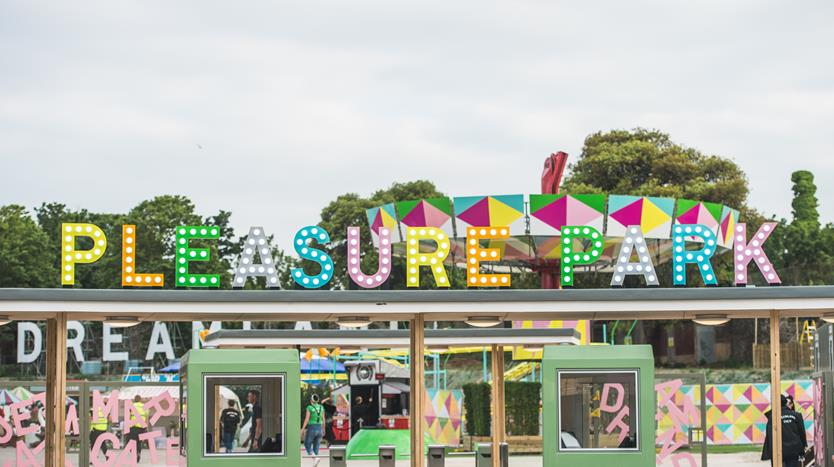

Camber’s Theme Park.
You will hear a podcast on Camber’s Theme Park.
Presenter: Welcome to Camber’s Park podcast. In the next few minutes, I’ll tell you a little about the park and the amazing things we have to offer.
We like to think that Camber’s offers more than other theme parks. Like them, we have a variety of exciting rides for people of all ages, but Camber’s also places strong emphasis on the educational experience for its visitors ... not boring facts but lots of interactive exhibits. Although it’s mainly an outdoor experience, we do have some indoor activities if the weather gets too dreadful.
The park’s got a lovely well established feel, set in eighty acres of beautiful countryside about three miles south of the tourist resort of Dulchester. The park was set up in nineteen ninety seven by the Camber family but then taken over by new owners in two thousand and four, who have maintained the original vision of the Cambers. It has lots of old trees, hundreds of flower beds and a gorgeous lake.
Camber’s has over forty- five different rides, exhibits and arcades. All but one of these is free once you have paid your entrance fee (we charge a small fee for our newest ride, to reduce the length of the queues). You don’t pay anything for parking. A family ticket - for a family of four - works out at about eight pounds per person, which is amazing value. Full details of current prices are shown on our website, along with full details of rides, etc., and directions for getting to us.
We also have a number of special offers. For example, if you live locally, why not join our Adventurers’ Club, which entitles you fifty percent off ticket prices all year round, and a special ‘lane’ for all rides and exhibits which means you don’t have to wait to get into any part of the park. See the Offers tab on the website.
We’ve recently added a number of new exhibits to the park, and we’re particularly proud of our Future Farm Zone, which houses over twenty different species of animals, from chipmunks to dairy cows. The emphasis is on getting near to the animals - all of them can be petted and you can buy food for feeding the animals. Many of our younger visitors say that this is the high point of their visit!
And speaking of food, don’t let the animals have all the fun. We have a total of seven different catering outlets on the site. We’re open ten to five thirty all year round and cold drinks and snacks can be bought at any time during opening hours. And hot food is available most of the day in the Hungry Horse cafe - from eleven until five - just half an hour before closing time.
Presenter: Now we want all our visitors to have an exciting time when they come to the park but our first priority must be safety. Parents and guardians know their children’s behaviour and capabilities. But here at the park we have set certain conditions for each of the rides to ensure that all visitors get the maximum enjoyment out of the experience and feel secure at all times. There are four major rides at the park. Our newest ride is the River Adventure which is designed to reproduce the experience of white-water rafting. No amount of protective clothing would make any difference so only go on this ride if you’re prepared to get wet! Children under eight can go on this ride, but all under sixteens must have an adult with them.
Not all of our rides are designed for thrills and spills. Our Jungle Jim rollercoaster is a gentler version of the classic loop the loop, specially created for whole family enjoyment - from the smallest children to elderly grandparents, suitable for all levels of disability and health conditions. Carriages have comfortable seating for up to eight people, with safety belts for each passenger which must be worn at all times. Sit back and enjoy the scenery!
One of the best established and most popular of Camber’s rides is the massive Swoop Slide. Whizz down the polished vertical slide nine metres in height and scream to your heart’s content. There are no age or height restrictions. Be careful though - you must have on long trousers so you won’t get any speed burns!
And then there’s the famous Zip Go-kart stadium with sixteen carts: eight for single drivers and eight for kids preferring to ride along with mum, dad or carer. Take part in high-speed races in our specially designed Formula One-style karts - but no bumping other karts, please. All riders must be above one point two metres because they have to be able to reach the pedals ... even in the shared karts.
Full details of all safety features are available on our website at www.Camberspark.com.
So come and make a day of it at Camber’s Theme Park!